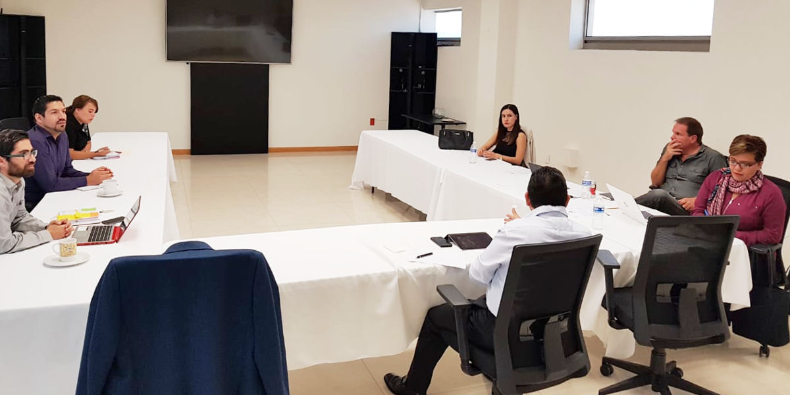

Sistema Anticorrupción del Estado de Coahuila. Consejo de Participación Ciudadana.
Saltillo, Coahuila.- Integrantes de la Comisión Ejecutiva de la Secretaría Ejecutiva del Sistema Anticorrupción del Estado de Coahuila, sesionaron el miércoles 10 de octubre de 2018, para dar a conocer los avances sobre los planes de trabajo de las comisiones de cada consejero y la estrategia para impulsar actividades que permitan prevenir, detectar y sancionar posibles hechos de corrupción.
La consejera Lourdes de Koster López, coordinadora de la Comisión Ejecutiva, dio lectura a la propuesta de Orden del Día que fue aprobada por unanimidad por los consejeros Juan Adolfo Von Bertrab Saracho, Carlos Rangel Orona y Jafia Pacheco Valtierra, así como por Luis Alberto Gutiérrez Arizpe, encargado del Despacho de la Secretaría Técnica, quien forma parte de la Comisión Ejecutiva.
En su intervención, el consejero Juan Adolfo Von Bertrab Saracho habló de los avances de la Comisión de Vinculación con Municipios y planteó una propuesta para generar esquemas de comunicación con autoridades municipales para desarrollar acciones en conjunto y de manera coordinada.
En el mismo sentido, el consejero Carlos Rangel Orona, quien coordina la Comisión de Asuntos Jurídicos, subrayó la importancia de analizar una estrategia que permita incentivar a las empresas para que desarrollen y adopten políticas de honestidad, transparencia y códigos de ética.
La consejera Jafia Pacheco Valtierra habló de su visión sobre la parte jurídica y de reglamentación interna en el CPC y la propia Comisión Ejecutiva, así como de la prioridad para generar un mecanismo de comunicación permanente y directa con la ciudadanía.
Lourdes de Koster, coordinadora de la Comisión de Comunicación y Vinculación presentó una propuesta para impulsar agendas conjuntas entre el CPC y la sociedad civil organizada, colectivos, y defensores de derechos humanos. Además de dar un avance del cumplimiento de los objetivos específicos del plan de comunicación externa del CPC.
